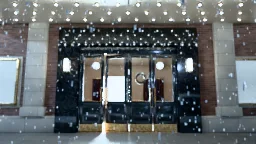

A seat is kept for you
IIthe doors
One wreath hung on the brass doors. Nothing else said what night it was.
From behind, as it reached them, a single mark showed low on the coat’s back, cut through to the cream. A cuff rose toward the brass and stopped short. Some doors are not for opening yourself.
The door swung inward untouched, the way a hand is held out, and the coat went in out of the snow.

STAND-IN · img/book/plate-ii/master.* (the plate for II. The Doors: The brass doors and the wreath, the coat’s cuff at the edge of the frame.; 8K, 7680 × 4320)Kept: One door standing open, untouched.